Своя марка · розница
MIKA
Главный собственный бренд. Если покупатель спрашивает «что у вас своё / посоветуйте нормальное недорого» — чаще начинайте с MIKA.

По материалам сайта «У Михалыча»: марка относительно новая, но уже с хорошими отзывами. Баланс качество + доступная цена + широкий ассортимент.
Что сказать покупателю
- «Это наша собственная марка — без переплаты за громкое имя».
- «Можно собрать всё нужное в одной линейке».
- «Подходит и для дома/дачи, и для рабочих задач».


Монтажные пены


Как продавать: щели → бытовая; двери/окна → проф под пистолет; мороз → зимняя; огонь → огнестойкая B1; плиты/блоки → клей-пена. К проф-пене предложите пистолет и очиститель. Шпаргалка — на главной.
Все насосы MIKA
Полный список из каталога. Уточняйте наличие и артикул на складе.
| Артикул | Наименование | Ключевое |
|---|---|---|
| 335110В | Вибрационный ВПН-10В (верхний забор) | 280 Вт · 18 л/мин · кабель 10 м · напор 60–70 м |
| 335110Н | Вибрационный ВПН-10Н (нижний забор) | 280 Вт · 18 л/мин · кабель 10 м · напор 60–70 м |
| 335115В | Вибрационный ВПН-15В (верхний забор) | 280 Вт · 18 л/мин · кабель 15 м |
| 335115Н | Вибрационный ВПН-15Н (нижний забор) | 280 Вт · 18 л/мин · кабель 15 м |
| 335125В | Вибрационный ВПН-25В (верхний забор) | 280 Вт · 18 л/мин · кабель 25 м |
| 335125Н | Вибрационный ВПН-25Н (нижний забор) | 280 Вт · 18 л/мин · кабель 25 м |
| 335140В | Вибрационный ВПН-40В (верхний забор) | 280 Вт · 18 л/мин · кабель 40 м · выход ¾″ |
| 33528D | Дренажный ДН-750 Вт (грязная вода) | 750 Вт · 10 м³/ч · напор 10 м |
| 335275D | Дренажный НД-750 | 750 Вт · 13 000 л/ч · напор 7,5 м · частицы до 30 мм |
| 335324L | Насосная станция НС-750 · 24 л | 750 Вт · напор 50 м · 3600 л/ч · бак 24 л |
| 3354370В | Скважинный винтовой СН-В 370 Вт | 25 л/мин · напор 45 м · Ø 3,5″ |
| 3354550В | Скважинный винтовой СН-В 550 Вт | 30 л/мин · напор 90 м |
| 335430Ц | Скважинный центробежный СН-Ц 370 Вт | 47 л/мин · напор 50 м · Ø 3″ |
| 335450Ц | Скважинный центробежный СН-Ц 550 Вт | 47 л/мин · напор 70 м · кабель 50 м |
| 335543П | Поверхностный ПН-800 | 800 Вт · напор 43 м · 5000 л/ч |


Как продавать: верхний забор — более чистая вода сверху; нижний — забрать почти до дна. Скважинный винтовой терпит больше примесей; центробежный — чище вода и выше производительность.
Угольные брикеты MIKA, 3 кг
Арт. 331113. Плотные брикеты — разжигать иначе, чем обычный уголь из пыли.

Сценарий №1 — самый быстрый (стартером)
Самый быстрый способ разжечь именно эти плотные брикеты — стартером. Засыпаете их сверху, снизу ставите один-два спиртовых тюбика. Поджигаете. За счёт плотной тяги внутри цилиндра тяжёлые брикеты схватываются равномерно. Буквально 15–20 минут — и всё готово.
Сценарий №2 — экономичный «Домиком» (без стартера)
Поскольку брикеты тяжелее и плотнее обычной древесной пыли, им нужен правильный подвод воздуха снизу.
Шаг 1 (классический). Строим из самих брикетов колодец или шалашик. Пустота внутри даст отличную тягу. А внутрь «домика» подкладываем лёгкие дровишки — щепу, тонкие ветки или лучину. Они быстро займутся и плавно разогреют массивные брикеты по краям. Через те же 15–20 минут всё прогорит ровно.
Шаг 2 (гибридный, если нет мелких дров). Если тонких дров под рукой нет, можно использовать спиртовые тюбики. Кладёте их прямо на дно мангала, строите над ними тот же домик из брикетов, а сверху можете накинуть немного крупных дров для аромата, если нужно. Тюбики дадут мощный импульс снизу, чтобы пробить плотность брикета.
Важно сказать покупателю
С этими брикетами главное правило — не торопиться. Не лейте жидкость и не пытайтесь раздуть их мехами сразу. Дайте этим 15–20 минут. И где-то в начале придётся придерживать огонь, аккуратно подкидывая мелкие веточки, пока конструкция не окрепнет.
Весь остальной ассортимент MIKA
Ниже — позиции из каталога по группам и короткие подсказки, как предлагать в зале.
Бетоносмесители MIKA
Как продавать: Объём барабана под объём работ. Рядом покажите TORRA как альтернативу по цене/наличию.
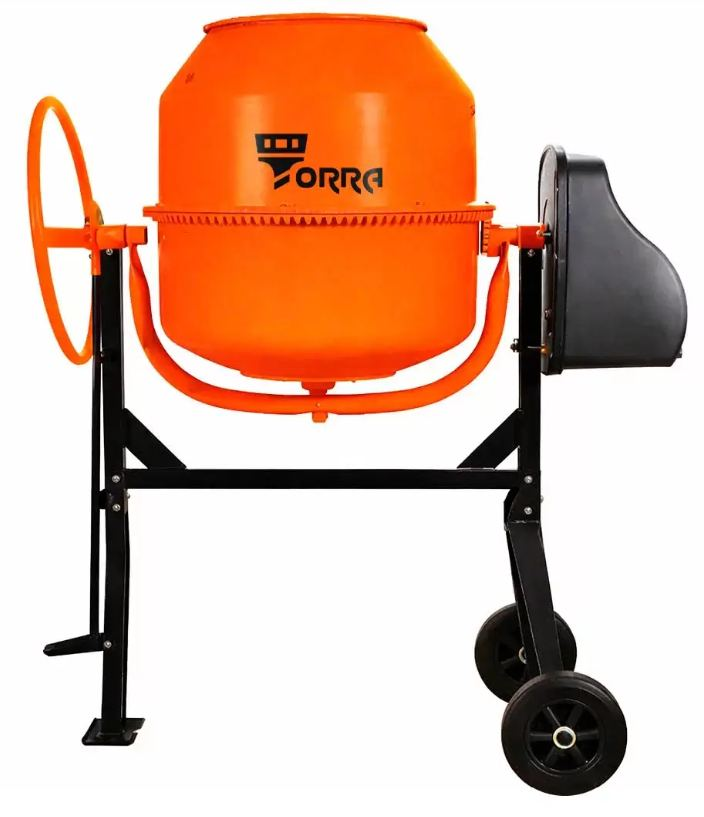
| Артикул | Наименование |
|---|---|
| 3311140Y | Бетоносмеситель MIKA СM-140 |
| 3311160Y | Бетоносмеситель MIKA CM-160 |
| 3311180Y | Бетоносмеситель MIKA СМ-180 |
| 3311200Y | Бетоносмеситель MIKA СМ-200 |
Масла
Как продавать: Уточните технику: 2T или 4T — не взаимозаменяемы. Цепь / компрессор / ТАД-17 — только по назначению. Сверьте фасовку 100 мл / 1 л.
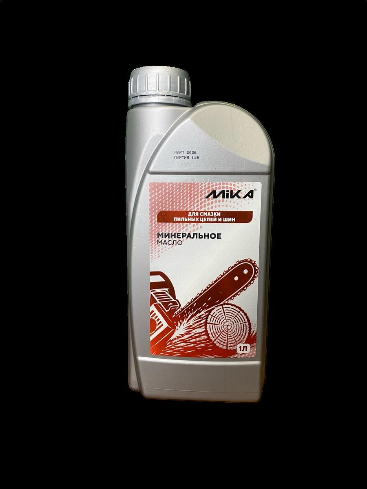
| Артикул | Наименование |
|---|---|
| 33483/1 | Масло моторное минеральное для 2х тактных двигателей MIKA, 1 литр |
| 33482/1 | Масло моторное полусинтетическое для 2х тактных двигателей MIKA, 1 литр |
| 33482/1Д | Масло моторное полусинтетическое для 2х тактных двигателей с дозатором MIKA, 1 литр |
| 33441/1 | Масло моторное минеральное для 4х тактных двигателей MIKA, 1литр |
| 33442/1 | Масло моторное полусинтетическое для 4х тактных двигателей MIKA, 1литр |
| 33414/1 | Масло трансмиссионное ТАД 17 MIKA, 1 литр |
| 33425/1 | Масло для поршневых компрессоров MIKA, 1 литр |
| 33436/1 | Масло для смазки цепей и шин MIKA, 1 литр |
| 33483/1G | Масло минеральное для 2х тактных двигателей 2T GARDEN Mika, 1л |
| 33483/01 | Масло моторное минеральное для 2х тактных двигателей API TB, 100мл MIKA |
| 33482/01 | Масло моторное полусинтетическое для 2х тактных двигателей API TC, 100мл MIKA |
Растворители, огнебио, грунтовки
Как продавать: Под задачу: обезжирить / разбавить ЛКМ / снять / защитить дерево. Напомните про вентиляцию и перчатки.
| Артикул | Наименование |
|---|---|
| 33757/05 | Уайт спирит MIKA 0,5 л |
| 33757/1 | Уайт спирит MIKA 1 л |
| 33757/5 | Уайт спирит MIKA 5 л |
| 33757/10 | Уайт спирит MIKA 10 л |
| 33758/05 | Растворитель 646 MIKA 0,5 л |
| 33758/1 | Растворитель 646 MIKA 1 л |
| 33758/5 | Растворитель 646 MIKA 5 л |
| 33758/10 | Растворитель 646 MIKA 10 л |
| 33754/1 | Растворитель 650 MIKA 1 л |
| 33754/5 | Растворитель 650 MIKA 5 л |
| 33753/1 | Ацетон 1 л MIKA |
| 33753/5 | Ацетон 5 л MIKA |
| 33753/10 | Ацетон 10 л MIKA |
| 33755/05 | Сольвент MIKA 0,5 л |
| 33756/05 | Обезжириватель MIKA 0,5 л |
| 33752/1 | Керосин ТС-1 MIKA 1л |
| 33752/5 | Керосин ТС-1 MIKA 5л |
| 3377310 | Огнебиозащита для древесины MIKA ОГНЕБИО PROF, 2ая группа 10л |
| 3391705 | Грунтовка глубокого проникновения MIKA 5 л канистра |
| 3391710 | Грунтовка глубокого проникновения MIKA 10 л канистра |
Пистолеты для пены
Как продавать: К проф-пене предложите пистолет: эконом / металл / тефлон. Скажите про промывку очистителем после работы.
| Артикул | Наименование |
|---|---|
| S303-01 | Пистолет для монтажной пены цельнометаллический S303-01 |
| Y3010-03 | Пистолет для монтажной пены разборный (тефлон.покрытие,адаптер металл.) |
| S305-02 | Пистолет для монтажной пены, металлический |
| SY3021 | Пистолет для монтажной пены Эконом |
| S8002 | Пистолет для монтажной пены с тефлоновым покрытием |
Тачки
Как продавать: Объём кузова, колесо (пневмо/литое), для сада или стройки. Сверьте наличие на складе.
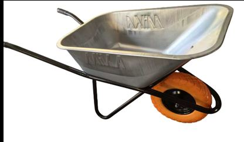
| Артикул | Наименование |
|---|---|
| 33664218602 | Тачка строительная усиленная одноколесная MIKA, черная (140 литров, 230 кг, черная, колесо 6-50.8) |
| 33664216418 | Тачка строительная одноколесная MIKA (110 литров, 200 кг, колесо 4.00-8) |
| 33664226532 | Тачка строительная двухколесная MIKA (110 литров, колесо 4.00-8, усиленная рама, 230 кг) |
| 33664236202 | Тачка садовая одноколесная MIKA (65 литров, 110 кг, колесо 3.25-8) |
| 336642PUBL | Тачка строительная одноколесная MIKA (110 литров, черные ручки, колесо 4.00-8 черного цвета полиуретан) |
| 33664228602 | Тачка строительная усиленная двухколесная MIKA, черная (140л, 250 кг, черная, колесо 6-50.8) |
Катушки для триммера
Как продавать: Под триммер: диаметр лески и тип головки. Можно сразу предложить запас лески MIKA.
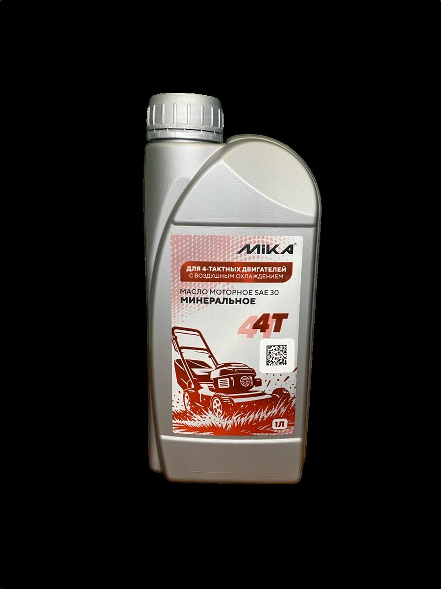
| Артикул | Наименование |
|---|---|
| 336638А002 | Катушка для триммера MIKA А002 М10*1.25 LF |
| 336638А003 | Катушка для триммера MIKA А003 М10*1.25 LF |
| 336638А005 | Катушка для триммера MIKA А005 М10*1.25 LF |
| 336638А012 | Катушка для триммера MIKA А012 М10*1.25 LF |
| 336638А014 | Катушка для триммера MIKA А014 М10*1.25 LF |
| 336638А019 | Катушка для триммера MIKA А019 М10*1.25 LF |
| 336638А034 | Катушка для триммера MIKA А034 М10*1.25 LF |
| 336638В010 | Катушка для триммера MIKA В010 М10*1.25 LF |
| 336638В021 | Катушка для триммера MIKA В021 М10*1.25 LF |
| 336638С010 | Катушка для триммера MIKA С010 М10*1.25 LF |
Леска для триммера
Как продавать: Диаметр и сечение (круг / квадрат / витой). Сверьте с катушкой и моделью триммера.
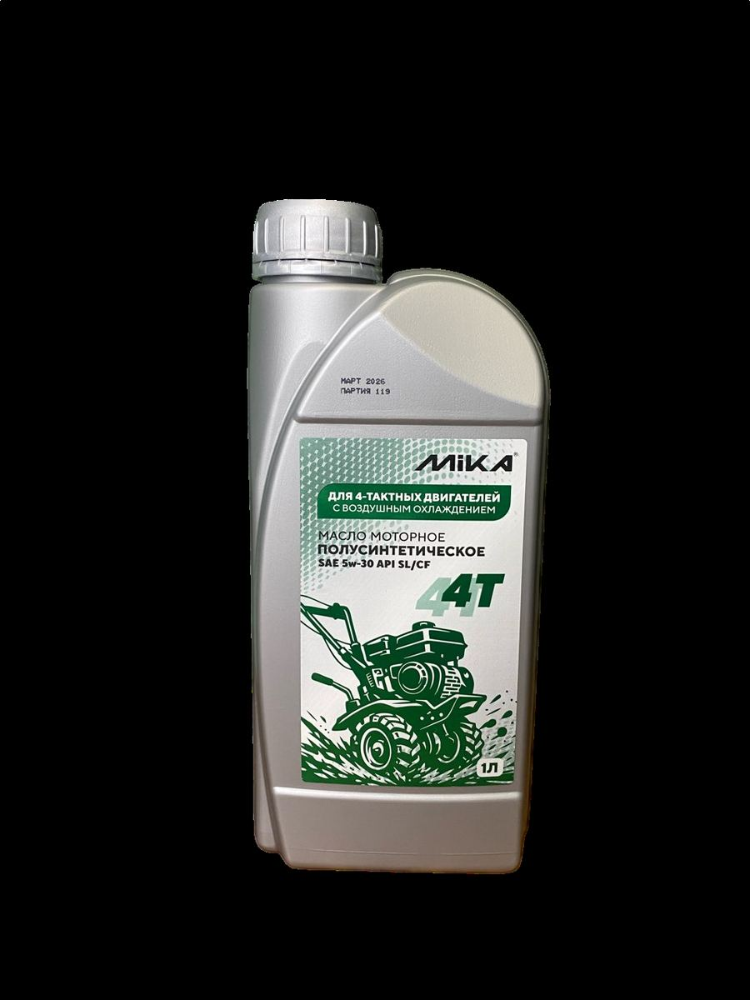
| Артикул | Наименование |
|---|---|
| 3366212415К | Леска для триммера 2.4*15м MIKA звезда бумага |
| 3366222415К | Леска для триммера 2.4*15м MIKA круг бумага |
| 3366233015К | Леска для триммера 3.0*15м MIKA звезда бумага |
| 3366213015К | Леска для триммера 3.0*15м MIKA круг бумага |
| 3366222415К | Леска для триммера 2.4*15м MIKA квадрат бумага |
| 3366211315К | Леска для триммера 1.3*15м MIKA круг бумага |
| 3366222015К | Леска для триммера 2.0*15м MIKA квадрат бумага |
| 3366242415К | Леска для триммера 2.4*15м MIKA семиугольник бумага |
| 33662522015К | Леска для триммера 2.0*15м MIKA двойной крученый квадрат бумага |
| 3366223015К | Леска для триммера 3.0*15м MIKA квадрат бумага |
| 3366243015К | Леска для триммера 3.0*15м MIKA семиугольник бумага |
| 33662121315К | Леска для триммера 1.3*15м MIKA крученый квадрат бумага |
| 3366232415В | Леска для триммера 2.4*15м MIKA звезда блистер |
| 33662122415В | Леска для триммера 2.4*15м MIKA крученый квадрат блистер |
| 33662223015В | Леска для триммера 3.0*15м MIKA двойной крученый квадрат блистер |
| 3366212015В | Леска для триммера 2.0*15м MIKA круг блистер |
| 33662523012В | Леска для триммера 3.0*12м MIKA двойной крученый квадрат блистер |
| 3366212415В | Леска для триммера 2.4*15м MIKA круг блистер |
| 33662123015В | Леска для триммера 3.0*15м MIKA крученый квадрат блистер |
| 3366212487В | Леска для триммера 2.4*87м MIKA круг блистер |
| 33662222415В | Леска для триммера 2.4*15м MIKA двойной квадрат блистер |
| 3366232015В | Леска для триммера 2.0*15м MIKA звезда блистер |
| 33662212415В | Леска для триммера 2.4*15м MIKA двойной круг блистер |
| 3366212415В | Леска для триммера 2.4*15м MIKA круг с металлом блистер |
| 3366232495В | Леска для триммера 2.4*95м MIKA звезда блистер |
| 3366213015В | Леска для триммера 3.0*15м MIKA круг блистер |
| 33662124260В | Леска для триммера 2.4*260м MIKA круг блистер |
Метизы
Как продавать: Тип крепежа, диаметр, длина, покрытие. Не смешивайте «похожее» без сверки размера.
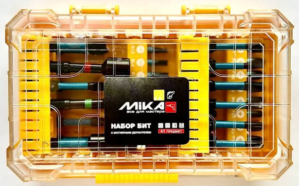
| Артикул | Наименование |
|---|---|
| — | Саморез потай оксид крупный шаг ЧЕРНЫЙ |
| руб/кг | Саморез потай оксид крупный шаг 3,5*32 (1кг/560шт.) MIKA |
| руб/кг | Саморез потай оксид крупный шаг 3,5*35 (1кг/530шт.) MIKA |
| руб/кг | Саморез потай оксид крупный шаг 3,5*41 (1кг/470шт.) MIKA |
| руб/кг | Саморез потай оксид крупный шаг 3,5*45 (1кг/430шт.) MIKA |
| руб/кг | Саморез потай оксид крупный шаг 3,5*51 (1кг/380шт.) MIKA |
| руб/кг | Саморез потай оксид крупный шаг 3,5*55 (1кг/360шт.) MIKA |
| руб/кг | Саморез потай оксид крупный шаг 3,8*65 (1кг/286шт.) MIKA |
| руб/кг | Саморез потай оксид крупный шаг 4,2*70 (3,5*70) (1кг/244шт.) MIKA |
| руб/кг | Саморез потай оксид крупный шаг 4,2*75 (1кг/233шт.) MIKA |
| руб/кг | Саморез потай оксид крупный шаг 4,8*90 (4,8*90) MIKA |
| руб/кг | Саморез потай оксид крупный шаг 4,8*100 (1кг/115шт.) MIKA |
| — | Саморез потай оксид крупный шаг ЧЕРНЫЙ (фасовка 3 кг) |
| руб/уп | Саморез потай оксид крупный шаг 3,5*51 (уп. 3 кг) MIKA |
| руб/уп | Саморез потай оксид крупный шаг 3,5*55 (уп. 3 кг) MIKA |
| руб/уп | Саморез потай оксид крупный шаг 3,8*65 (уп. 3 кг) MIKA |
| руб/уп | Саморез потай оксид крупный шаг 4,2*70 (уп. 3 кг) MIKA |
| руб/уп | Саморез потай оксид крупный шаг 4,2*75 (уп. 3 кг) MIKA |
| руб/уп | Саморез потай оксид крупный шаг 4,8*90 (уп. 3 кг) MIKA |
| руб/уп | Саморез потай оксид крупный шаг 4,8*100 (уп. 3 кг) MIKA |
| руб/уп | Саморез потай оксид крупный шаг 4,8*127 (уп. 3 кг) MIKA |
| руб/уп | Саморез потай оксид крупный шаг 4,8*152 (уп. 3 кг) MIKA |
| — | Саморез потай оксид крупный шаг ЧЕРНЫЙ (фасовка 1 кг) |
| руб/уп | Саморез потай оксид крупный шаг 3,5*16 (уп. 1 кг) MIKA |
| руб/уп | Саморез потай оксид крупный шаг 3,5*19 (уп. 1 кг) MIKA |
| руб/уп | Саморез потай оксид крупный шаг 3,5*25 (уп. 1 кг) MIKA |
| руб/уп | Саморез потай оксид крупный шаг 3,5*32 (уп. 1 кг) MIKA |
| руб/уп | Саморез потай оксид крупный шаг 3,5*35 (уп. 1 кг) MIKA |
| руб/уп | Саморез потай оксид крупный шаг 3,5*41 (уп. 1 кг) MIKA |
| руб/уп | Саморез потай оксид крупный шаг 3,5*45 (уп. 1 кг) MIKA |
| руб/уп | Саморез потай оксид крупный шаг 3,5*51 (уп. 1 кг) MIKA |
| руб/уп | Саморез потай оксид крупный шаг 3,5*55 (уп. 1 кг) MIKA |
| руб/уп | Саморез потай оксид крупный шаг 3,8*65 (уп. 1 кг) MIKA |
| руб/уп | Саморез потай оксид крупный шаг 4,2*70 (уп. 1 кг) MIKA |
| — | Шуруп универсальный белый/желтый цинк |
| руб/кг | Шуруп универсальный цинк белый 3,0*12 MIKA |
| руб/кг | Шуруп универсальный цинк белый 3,0*30 MIKA |
| руб/кг | Шуруп универсальный цинк белый MIKA 3,5*16 |
| руб/кг | Шуруп универсальный цинк белый 3,5*30 MIKA |
| руб/кг | Шуруп универсальный цинк белый MIKA 4,0*16 |
| руб/кг | Шуруп универсальный цинк белый MIKA 4,0*30 |
| руб/кг | Шуруп универсальный желтый цинк 4,0*45 MIKA |
| руб/кг | Шуруп универсальный желтый цинк 4,0*60 MIKA |
| руб/кг | Шуруп универсальный желтый цинк 4,0*70 MIKA |
| руб/кг | Шуруп универсальный желтый цинк 4,5*30 MIKA |
| руб/кг | Шуруп универсальный желтый цинк 4,5*35 MIKA |
| руб/кг | Шуруп универсальный желтый цинк 4,5*40 MIKA |
| руб/кг | Шуруп универсальный желтый цинк 4,5*45 MIKA |
| руб/кг | Шуруп универсальный желтый цинк 4,5*50 MIKA |
| руб/кг | Шуруп универсальный желтый цинк 4,5*60 MIKA |
| руб/кг | Шуруп универсальный желтый цинк 4,5*70 MIKA |
| руб/кг | Шуруп универсальный желтый цинк 4,5*80 MIKA |
| руб/кг | Шуруп универсальный желтый цинк 5,0*100 MIKA |
| руб/кг | Шуруп универсальный желтый цинк 5,0*40 MIKA |
| руб/кг | Шуруп универсальный желтый цинк 5,0*50 MIKA |
| руб/кг | Шуруп универсальный желтый цинк 5,0*70 MIKA |
| руб/кг | Шуруп универсальный желтый цинк 5,0*80 MIKA |
| руб/кг | Шуруп универсальный желтый цинк 5,0*90 MIKA |
| руб/кг | Шуруп универсальный желтый цинк 6,0*120 MIKA |
| руб/кг | Шуруп универсальный желтый цинк 6,0*160 MIKA |
| руб/кг | Шуруп универсальный желтый цинк 6,0*70 MIKA |
| руб/кг | Шуруп универсальный желтый цинк 6,0*90 MIKA |
| — | САМОРЕЗ КРОВЕЛЬНЫЙ |
| руб/шт | Саморез кровельный по металлу цинк 5,5*19 MIKA |
| руб/шт | Саморез кровельный по металлу MIKA 5,5*25 цинк |
| руб/шт | Саморез кровельный по металлу MIKA 5,5*19 RAL 8017 |
| руб/шт | Саморез кровельный по дереву MIKA 4,8*29 RAL 8017 |
| руб/шт | Саморез кровельный по дереву MIKA 4,8*35 RAL 8017 |
| руб/шт | Саморез кровельный по металлу MIKA 5,5*19 RAL 7024 |
| руб/шт | Саморез кровельный по дереву MIKA 4,8*29 RAL 7024 |
| руб/шт | Саморез кровельный по металлу MIKA 5,5*19 RAL 6005 |
| — | ШАЙБА УВЕЛИЧЕННАЯ ОЦИНКОВАННАЯ DIN9021 |
| руб/кг | Шайба увеличенная оцинкованная d 6 DIN9021 MIKA |
| руб/кг | Шайба увеличенная оцинкованная d 8 DIN9021 MIKA |
| руб/кг | Шайба увеличенная оцинкованная d 10 DIN9021 MIKA |
| руб/кг | Шайба увеличенная оцинкованная d 12 DIN9021 MIKA |
| руб/кг | Шайба увеличенная оцинкованная d 14 DIN9021 MIKA |
| руб/кг | Шайба увеличенная оцинкованная d 16 DIN9021 MIKA |
| — | ГАЙКА ОЦИНКОВАННАЯ DIN934 |
| руб/кг | Гайка оцинкованная М8 DIN934 MIKA |
| руб/кг | Гайка оцинкованная М6 DIN934 MIKA |
| руб/кг | Гайка оцинкованная М10 DIN934 MIKA |
| руб/кг | Гайка оцинкованная М12 DIN934 MIKA |
| руб/кг | Гайка оцинкованная М14 DIN934 MIKA |
| руб/кг | Гайка оцинкованная М16 DIN934 MIKA |
| — | БОЛТ ОЦИНКОВАННЫЙ С ПОЛНОЙ РЕЗЬБОЙ DIN933 |
| руб/кг | Болт оцинкованный с полной резьбой М6*20 DIN933 MIKA |
| руб/кг | Болт оцинкованный с полной резьбой М8*20 DIN933 MIKA |
| руб/кг | Болт оцинкованный с полной резьбой М8*25 DIN933 MIKA |
| — | ШПИЛЬКА РЕЗЬБОВАЯ ОЦИНКОВАННАЯ DIN975 |
| руб/шт | Шпилька резьбовая оцинкованная кл.п. 8,8 12*1000 DIN975 MIKA |
| руб/шт | Шпилька резьбовая оцинкованная кл.п 8,8 10*1000 DIN975 MIKA |
| руб/шт | Шпилька резьбовая оцинкованная кл.п 8,8 16*1000 DIN975 MIKA |
| руб/шт | Шпилька резьбовая оцинкованная кл.п 8,8 8*2000 DIN975 MIKA |
| руб/шт | Шпилька резьбовая оцинкованная кл.п 8,8 14*1000 DIN975 MIKA |
Биты
Как продавать: К шуруповёрту / INALL: тип шлица, длина, магнит. Наборы выгоднее по цене за единицу.

| Артикул | Наименование |
|---|---|
| 338331250ТК | Бита торсионная MIKA PH2х50мм красная (2шт) |
| 338331270ТК | Бита торсионная MIKA PH2х70мм красная (2шт) |
| 338331290ТК | Бита торсионная MIKA PH2х90мм красная |
| 338331250Т | Бита торсионная MIKA PH2х50мм (поштучно) |
| 338332150Т | Бита торсионная MIKA PZ1х50мм (поштучно) |
| 338332250Т | Бита торсионная MIKA PZ2х50мм (поштучно) |
| 338332290Т | Бита торсионная MIKA PZ2х90мм (поштучно) |
| 338332350Т | Бита торсионная MIKA PZ3х50мм (поштучно) |
| 3383312265К | Бита двухсторонняя MIKA PH2/PH2х65мм коричневая (поштучно) |
| 3383312265Н | Бита двухсторонняя торсионная MIKA PH2/PH2х65мм черная (поштучно) |
| 3383312265М | Бита двухсторонняя с магнитным ограничителем MIKA PH2x65мм (поштучно) |
| 33833PH250 | Бита MIKA PH2х50мм (поштучно) |
| 33833PH270 | Бита MIKA PH2х70мм (поштучно) |
| 33833PH290 | Бита MIKA PH2х90мм (поштучно) |
| 33833PZ150 | Бита MIKA PZ1х50мм (поштучно) |
| 33833PZ250 | Бита MIKA PZ2х50мм (поштучно) |
| 33833PZ350 | Бита MIKA PZ3х50мм (поштучно) |
| 3383341 | Набор бит MIKA 41 предмет |
| 3383349 | Набор бит MIKA 49 предметов |
| 338323 | Адаптеры для торцовых головок MIKA, 3 предмета 1/4*65,3/8*65,1/2*72 |
| 3383310 | Головка магнитная MIKA (бита) 10*65 (поштучно) |
| 3383313 | Головка магнитная MIKA (бита) 13*65 (поштучно) |
| 3383317 | Головка магнитная MIKA (бита) 17*65 (поштучно) |
| 3383308 | Головка магнитная MIKA (бита) 8*48 (поштучно) |
Мембраны и плёнки
Как продавать: Паро/гидро/ветрозащита — по узлу кровли или каркаса. Не путайте стороны укладки.
| Артикул | Наименование |
|---|---|
| 33921535 | Мембрана трехслойная супердиффузионная Mika AM (гидро-ветрозащита 35м2) |
| 33921570 | Мембрана трехслойная супердиффузионная Mika AM (гидро-ветрозащита, 70м2) |
| 3392135 | Пленка ветро-влагозащита А премиум Mika 90 (35 м2) |
| 3392170 | Пленка ветро-влагозащита А премиум Mika 90(1,6х43,75м), 70м2 |
| 3392235 | Пленка пароизоляционная В премиум Mika 60 (35м2) |
| 3392270 | Пленка пароизоляционная В премиум Мika 60 (1,6*43,75м) 70м2 |
| 3392470 | Пленка гидро-пароизоляционная С премиум Mika 70 (1,6*43,75) 70м2 |
| 3392370 | Пленка гидро- пароизоляционная D премиум Mika 95 (1,6х43.75м), 70 м2 |
| 3392335 | Пленка гидро- пароизоляционная D премиум Mika 95 (35 м2) |
Алмазные диски MIKA
Как продавать: Материал: бетон/камень/плитка → алмаз MIKA; металл/нерж → круги TORRA.
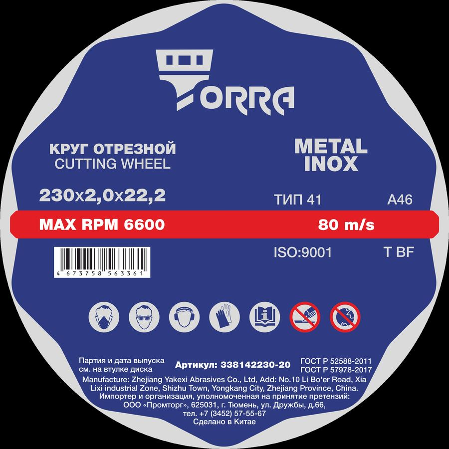
| Артикул | Наименование |
|---|---|
| 338111230S | Диск алмазный отрезной сегментный Mika Segment 230мм |
| 33812112511 | Диск алмазный отрезной cплошной cупертонкий Mika 125мм |
| 338121125T | Диск алмазный отрезной турбо универсальный Mika 125мм |
| 338121125TC | Диск алмазный отрезной турбо Ceramic Mika 125мм |
| 338131105B | Диск алмазный супертонкий отрезной Mika Blade 105мм |
| 338121125L | Диск алмазный универсальный мультифункциональный Mika Longlife 125м |
| 338121230A | Диск алмазный сегментированный отрезной по армированному бетону Alligator Mika 230мм |
| 338111230G | Диск алмазный отрезной турбосегментированный Mika Grizzly 230мм |
Станки
Как продавать: Задача: заточка / резка / сверление. Уточните питание и комплектность.
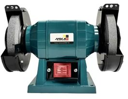
| Артикул | Наименование |
|---|---|
| 3319125 | Станок точильный MIKA BGM-125 (125мм, 150вт) |
| 33191125L | Станок точильный MIKA BGM-125L (125мм, 150вт, лампа) |
| 3319150L | Станок точильный MIKA BGM-150L (150мм, 150вт, лампа) |
| 33191200 | Станок точильный MIKA BGM-200 (200мм, 400вт) |
| 3319150B | Станок точильный дисково-ленточный MIKA BGM-150B (150мм, 250вт, 2950об/мин, 50х686мм) |
Рулетки, ножи, лезвия
Как продавать: Длина ленты / тип ножа. Предложите запасные лезвия к ножу.
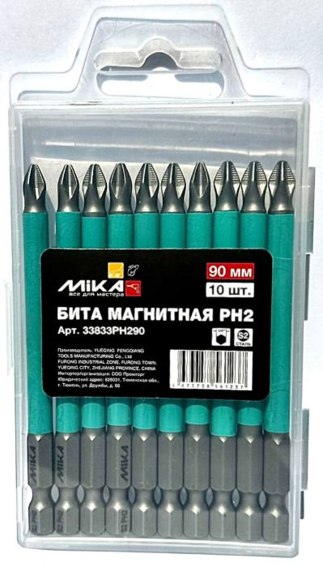
| Артикул | Наименование |
|---|---|
| 33111125 | Нож с выдвижным сегментированным лезвием 25мм Mika JH-507 |
| 33111118 | Нож с выдвижным сегментированным лезвием 18мм Mika JH-207C |
| 33111218 | Лезвия для ножа сегментированные Mika 18мм D05 |
| 33111225 | Лезвия для ножа Mika 25мм H02 |
| 331123316 | Рулетка магнитная Mika 3мх16мм JH-365B |
| 331123525 | Рулетка магнитная Mika 5мх25мм JH-565B |
| 331123825 | Рулетка магнитная Mika 8мх25мм JH-865B |
| 331123525М | Рулетка Mika 5м/25мм JH-576 |
Автохимия и мойка
Как продавать: Тип мойки и объём. Линейки EFFECT / Prof / STANDART — под интенсивность.

| Артикул | Наименование |
|---|---|
| 33000/5 | Мыло жидкое 5л в ассортименте |
| 33000/5У | Мыло жидкое перламутровое 5л в ассортименте |
| 33101111 | Средство для бесконтактной мойки Mika "EFFECT", 1 кг |
| 33101115 | Средство для бесконтактной мойки Mika "EFFECT", 5 кг |
| 33101121 | Средство для бесконтактной мойки Mika "Prof", 1 кг |
| 33101125 | Средство для бесконтактной мойки Mika "Prof", 5 кг |
| 33101141 | Средство для бесконтактной мойки Mika "STANDART", 1 кг |
| 33101145 | Средство для бесконтактной мойки Mika "STANDART", 5 кг |
Теплоноситель
Как продавать: Объём системы, температура, материал труб. Не смешивайте разные составы без инструкции.
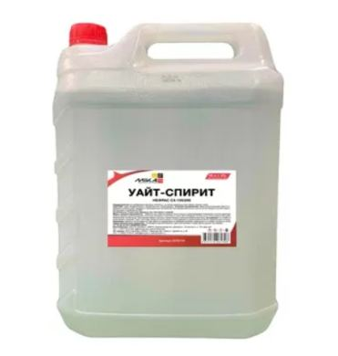
| Артикул | Наименование |
|---|---|
| 33121110МЭГ | Теплоноситель Mika -65, этиленгликоль, 10 кг |
| 33121120МЭГ | Теплоноситель Mika -65, этиленгликоль, 20 кг |
| 33121110ППГ | Теплоноситель ЭКО Mika -30, пропиленгликоль, 10 кг |
| 33121120ППГ | Теплоноситель ЭКО Mika -30, пропиленгликоль, 20 кг |
Лопаты
Как продавать: Садовая / снег / штыковая — под задачу и рукоять.
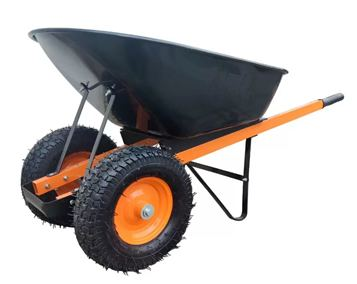
| Артикул | Наименование |
|---|---|
| 3314111 | Лопата снеговая морозоустойчивая MIKA |
Электроды
Как продавать: Диаметр и тип покрытия под металл и аппарат. Сверьте ток.
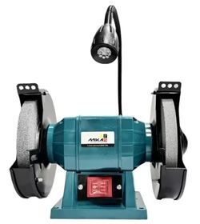
| Артикул | Наименование |
|---|---|
| 3313111 | Электроды сварочные Mika MK-46, 1 кг |
| 33131155 | Электроды сварочные Mika MK-46, 5,5 кг |
Шланги
Как продавать: Диаметр, длина, давление/назначение (полив / воздух).
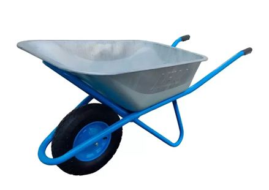
| Артикул | Наименование |
|---|---|
| 33142125 | Шланг поливочный Mika армированный 3/4"x25м, 5-слойный, морозостойкий, ТЭП |